01钩子 / 问题
用低成本大片承诺吸引注意
开场对比过去拍大片需要巨额成本和复杂技术，随后承诺现在用 AI 在家也能完成。
一段实拍加一段风格描述，就能在 Runway 中快速生成具有电影特效感的视频。
这条视频只有 18 秒，步骤极少、结果明确，收藏甚至略高于点赞；但评论几乎被“666 领取工具”占据，工具入口被藏起来，公开互动无法说明真实学习效果。
一段实拍加一段风格描述，就能在 Runway 中快速生成具有电影特效感的视频。
不是复述内容，而是标出每一段承担的叙事任务、观众问题和画面证据。
开场对比过去拍大片需要巨额成本和复杂技术，随后承诺现在用 AI 在家也能完成。
教程进入 Runway，上传一段实拍视频，再写提示词描述想要的风格和画面。
生成片段出现后，她用‘有手就行’降低难度感，并要求观众评论 666 获取工具。
下列章节覆盖视频的主要论点、步骤与结果；每段都保留时间码和关键画面。
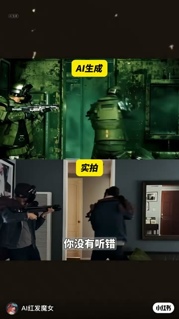
开场对比过去拍大片需要巨额成本和复杂技术，随后承诺现在用 AI 在家也能完成。
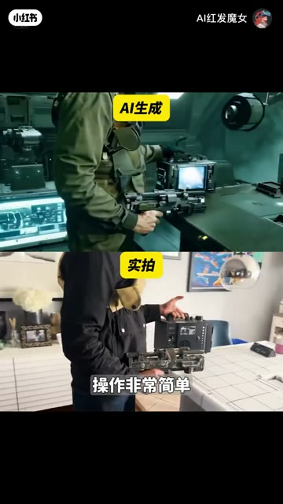
教程进入 Runway，上传一段实拍视频，再写提示词描述想要的风格和画面。
生成片段出现后，她用‘有手就行’降低难度感，并要求观众评论 666 获取工具。
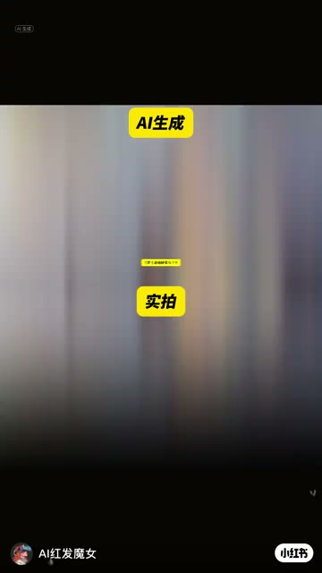
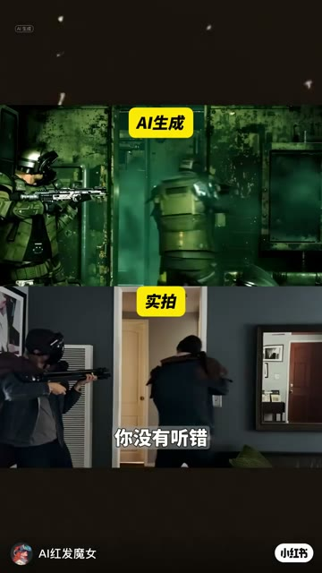
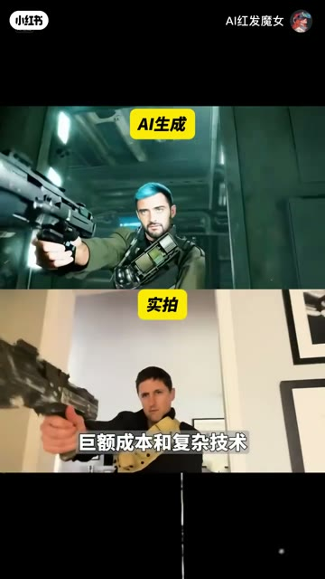
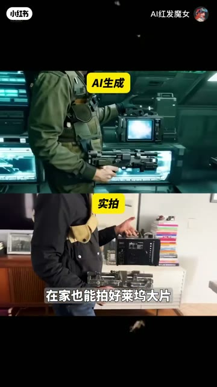
短视频每 1 秒、常规视频每 2 秒、超长视频每 3 秒取一帧。
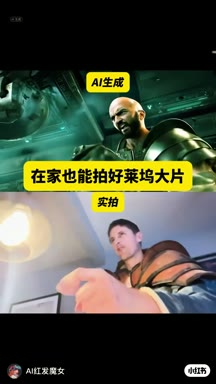
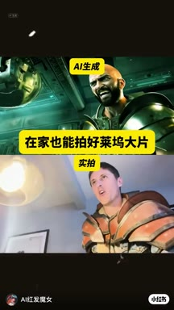
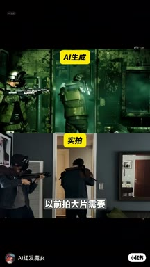
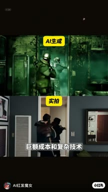
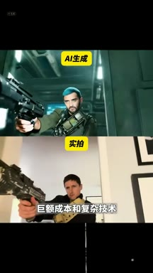
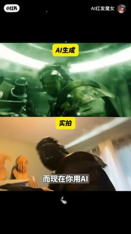
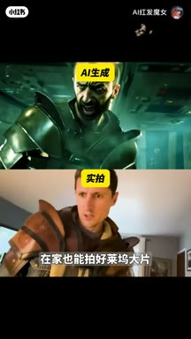
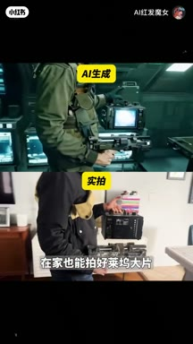
小红书官方 zh-CN 字幕 · 4 段 · 128 字。字幕只记录声音；工具名、界面文字和结果含义必须结合上方视觉知识地图复核。
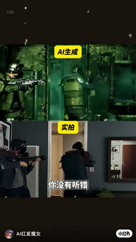
你在家里也能拍好莱坞大片了，你没有听错，以前拍大片需要巨额成本和复杂技术
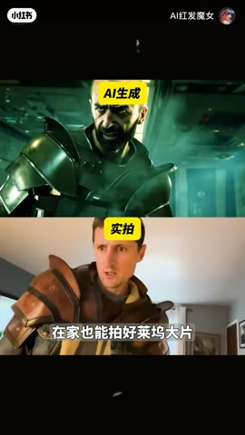
而现在你用ai在家也能拍好莱坞大片，操作非常简单
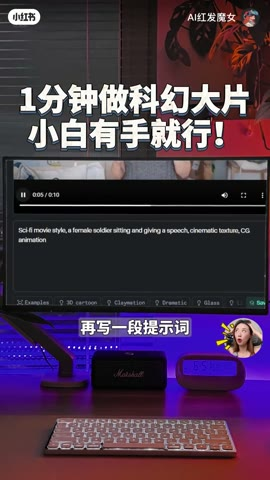
直接在runway里上传一段实拍，再写一段提示词，描述风格和画面，很快呀
一段视频就渲染好了，真的有手就行，找不到工具的回六六六给你们安排
视频只展示一次成功结果，没有生成耗时、费用、失败样本或版权信息；评论区的 666 不能等同于有效学习或转化。
打开小红书原帖 ↗